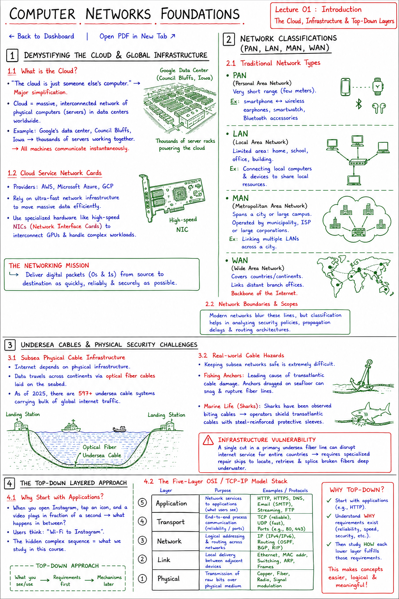

Short Notes & Visual Summary
Handwritten / quick summary notes for Lecture 01:

Click image to open high-resolution version in new tab
Demystifying the Cloud & Global Infrastructure
1.1 What is the Cloud?
There is a common saying: "The cloud is just someone else's computer." While simple, this is a major simplification. In reality, the cloud consists of a massive, interconnected network of physical computers housing thousands of server racks across data centers worldwide.
For instance, an overhead view of Google's data center in Council Bluffs, Iowa, reveals thousands of servers. All of these machines must communicate with each other instantaneously to serve requests.
1.2 Cloud Service Network Cards
Large-scale cloud providers like Amazon Web Services (AWS), Microsoft Azure, and Google Cloud Platform (GCP) rely on super-fast network infrastructure to move massive amounts of data efficiently. This includes deploying specialized hardware like dedicated network interface cards (NICs) to interconnect GPUs for complex workloads.
The goal of a computer network is to deliver digital packets (0s and 1s) from a source device to a destination device as quickly, reliably, and securely as possible.
Network Classifications (PAN, LAN, MAN, WAN)
2.1 Traditional Network Types
Networks are historically categorized based on their geographic scope and area of coverage:
- PAN (Personal Area Network): Covers short distances, typically within a few meters. Examples include connecting a smartphone to wireless headphones, smartwatches, or Bluetooth accessories.
- LAN (Local Area Network): Restricts connectivity within a limited spatial footprint like a home, school, or office building. It connects local computers and devices to share local resources.
- MAN (Metropolitan Area Network): Spans larger citywide regions. Typically operated by municipal administrations, ISPs, or large corporations to link multiple LANs across town.
- WAN (Wide Area Network): Extends across countries or continents. It links distant branch offices and constitutes the backbone of the internet itself.
2.2 Network Boundaries and Scopes
Modern networks blur these lines, but categorization remains helpful for analyzing security policies, propagation delays, and routing architectures.
Undersea Cables & Physical Security Challenges
3.1 Subsea Physical Cable Infrastructure
Despite being called "the cloud," the internet depends on substantial physical infrastructure. Data is sent across continents through optical fiber cables laid along the seabed. As of 2025, there are over 597 undersea cable systems carrying the bulk of global internet traffic.
3.2 Real-world Cable Hazards
Keeping these subsea networks safe is extremely difficult because they are exposed to ocean floor hazards:
- Fishing Anchors: The leading cause of transatlantic cable damage. Anchors dragged along the seafloor can snag and rupture optical fiber lines.
- Marine Life (Sharks): Sharks have been observed biting undersea cables. This led telecom operators to shield transatlantic cables with steel-reinforced protective sleeves.
A single cut in a primary undersea fiber line can disrupt internet service for entire countries, requiring specialized repair ships to locate, retrieve, and splice the broken fibers deep underwater.
The Top-Down Layered Approach
4.1 Why Start with Applications?
When you open Instagram, tap an icon, and a video plays, what happens in that fraction of a second? Most users only think of "Wi-Fi to Instagram". The complex sequence of events that occurs in between is what we study in this course.
We use a Top-Down Approach for this course, starting with what you see and interact with daily:
- Application Layer: Explores Web protocols, HTTP, Domain Name System (DNS), and media streaming.
- Transport Layer: Studies port-to-port connections, reliable delivery (TCP), and fast transmission (UDP).
- Network Layer: Focuses on global IP routing, pathfinding, and subnet boundaries.
- Link Layer: Coordinates device-to-device local hops, Ethernet frames, and MAC addresses.
- Physical Layer: Deals with actual copper wires, fiber cables, radio waves, and signal modulation.
4.2 The Five-Layer OSI/TCP/IP Model Stack
By starting with applications (like HTTP), we establish the requirements first. Understanding why an application needs reliable delivery makes the mechanisms of the Transport Layer (like TCP) much easier to follow.
Syllabus, References & Grading
5.1 Reference Textbooks
The primary references for this course are:
- Computer Networking: A Top-Down Approach by James Kurose and Keith Ross.
- Data Communications and Networking by Behrouz A. Forouzan.
5.2 Grading Policy
- Contests & Practical Tasks: 20%
- Projects & Implementations: 20%
- Mid Semester Examination: 20%
- End Semester Examination: 40%
Original PDF Notes
Below is the original PDF document for your reference: